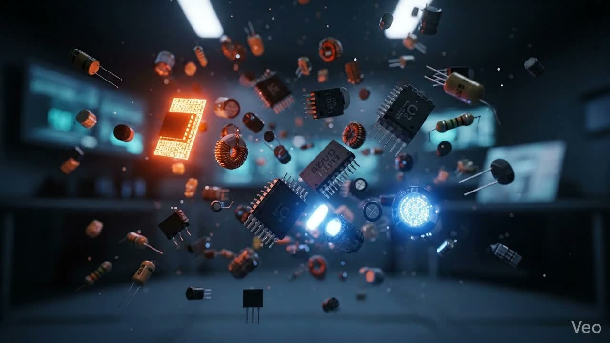

Core Electronics Job Aspirant (2023 – 2027)
I'm Durga Dharshini, a motivated and detail-oriented Electronics and Communication Engineering student with strong academic performance and a passion for embedded systems, IoT, and circuit design. I am eager to apply theoretical knowledge in real-world applications through internships or entry-level opportunities.
Government College of Engineering – Tirunelveli
Bachelor of Electronics and Communication Engineering
2023 – 2027
Designed and implemented an automatic lighting system that activates in the absence of ambient light using an LDR (Light Dependent Resistor) and a transistor-based switching circuit. The system switches ON an LED or AC bulb through a relay and turns OFF automatically in daylight. Demonstrates knowledge in sensor-based automation, analog electronics, and energy-efficient design.
Designed and built a simple water level monitoring system using NPN transistors (BC547) and resistors. Conductivity of water is used to trigger transistor-based circuits, lighting LEDs to indicate low, medium, high, and full tank levels.
Developed a smart system to protect clothes drying outdoors from unexpected rainfall. A rain sensor detects precipitation and automatically retracts the clothesline using a motorized mechanism. Demonstrates embedded systems, automation, and real-life problem solving.